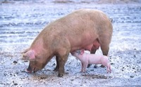

ぶた（豚）の飼育数
いちばん多くとれる都道府県
ぶたが日本でいちばん多く飼われているのは鹿児島県です。120万 頭で、全国（879万8,000 頭）の14%を占めます。

| 順位 | 都道府県 | 飼育数 | 全国に占める割合 |
|---|---|---|---|
| 1位 | 鹿児島県 | 120万 頭 | 14% |
| 2位 | 北海道 | 75万2,200 頭 | 8.5% |
| 3位 | 宮崎県 | 72万1,900 頭 | 8.2% |
この数字について
- 分類：豚の仲間
- 全国の飼育数：879万8,000 頭
- この数字が表すもの：飼育数（飼っている数）
- 調査：畜産統計調査 令和6年
- 47県分を調査（調査していない県は順位に入りません）